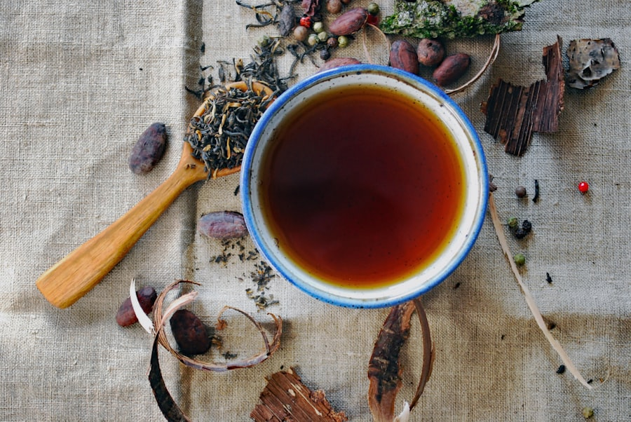
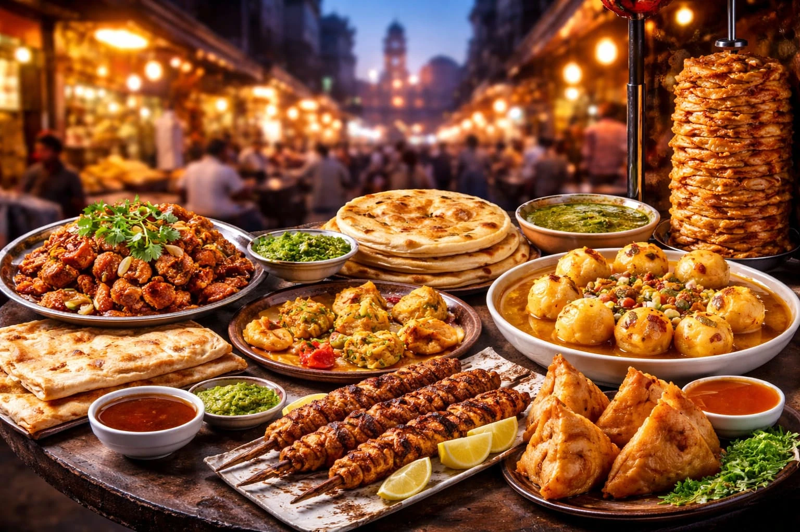
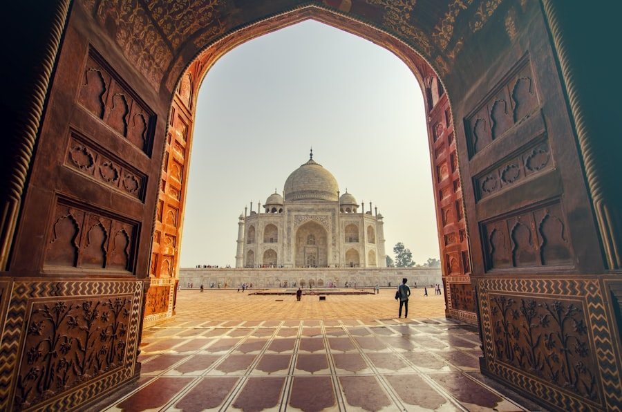
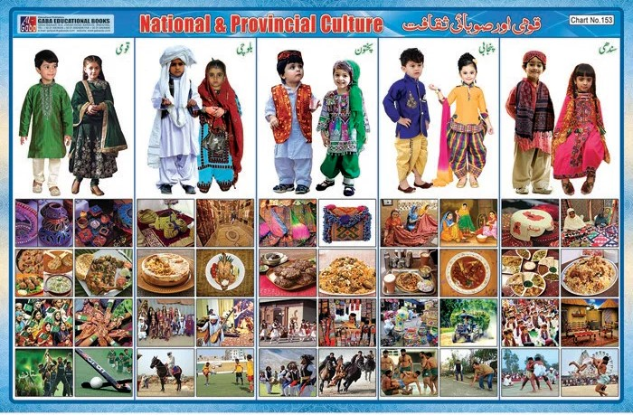

Culture & Food of Pakistan
Pakistan is a country rich in cultural heritage and culinary delights. From the bustling streets of Lahore to the serene valleys of Swat, each region offers a unique blend of traditions and flavors.
Travelers who take time to understand local customs, festivals, and food often enjoy a deeper and more memorable journey. Hospitality is a core part of Pakistani life, and guests are usually welcomed with warmth, respect, and generous meals.
Cultural Highlights
- Festivals: Experience vibrant festivals like Basant, Eid, and the Shandur Polo Festival.
- Music & Dance: Enjoy traditional music and dance forms such as Qawwali and Bhangra.
- Art & Craft: Explore intricate handicrafts, pottery, and textiles that reflect the country's artistic heritage.
- Languages: Pakistan has many regional languages. Urdu is widely understood, while Punjabi, Sindhi, Pashto, Balochi, and other languages are spoken across provinces.
- Hospitality: Offering tea, food, and respect to guests is an important cultural tradition.

Regional Traditions
Every province has its own style of dress, music, celebration, and daily life:
- Punjab
- Known for colorful weddings, lively folk music, Bhangra, and busy food streets in cities like Lahore.
- Sindh
- Famous for Sufi culture, traditional Ajrak patterns, pottery, and coastal city life in Karachi.
- Khyber Pakhtunkhwa
- Known for strong hospitality traditions, mountain culture, and scenic valleys like Swat.
- Balochistan
- Recognized for traditional crafts, desert and coastal landscapes, and unique cultural music.
- Gilgit-Baltistan
- Home to mountain communities, peaceful villages, folk festivals, and beautiful northern landscapes.

Culinary Delights
Pakistani cuisine is a fusion of flavors influenced by various cultures. Meals often include rice, bread, meat, spices, yogurt, and fresh salads. Some must-try dishes include:
- Biryani: A fragrant rice dish with spices, meat, and vegetables.
- Nihari: A slow-cooked stew typically served for breakfast.
- Samosas: Deep-fried pastries filled with spiced potatoes or meat.
- Chapli Kebab: A popular flat minced-meat kebab, especially loved in the north.
- Haleem: A rich, slow-cooked dish made with meat, lentils, and wheat.
- Seekh Kebab: Spiced minced meat cooked on skewers over flame.



Popular Drinks & Sweets
- Chai: Served everywhere and often offered to guests as a sign of welcome.
- Lassi: A refreshing yogurt drink, perfect with spicy food.
- Sugarcane juice: A popular summer street drink.
- Gulab Jamun & Jalebi: Sweet treats commonly found in markets and celebrations.
- Kheer: A traditional rice pudding enjoyed after meals or on special occasions.
Tip: Don't miss out on trying local street food for an authentic taste of Pakistan—but choose busy, clean stalls for a safer experience.
Pakistan's Rich Culture
Pakistan's culture is a beautiful blend of traditions, languages, and customs. Its history is reflected in its architecture, music, festivals, and everyday life.



Visitors can experience this rich heritage by exploring historical sites, joining local celebrations, and enjoying the warmth of Pakistani hospitality.
Cultural Etiquette for Travelers
- Dress modestly, especially when visiting religious sites and rural areas.
- Ask permission before photographing people.
- Accept tea or small hospitality offers politely when possible.
- Remove shoes when entering mosques or some homes.
- Use your right hand when giving or receiving things in traditional settings.
Best Ways to Experience Local Culture
- Visit heritage places such as forts, museums, and old city bazaars.
- Try regional dishes instead of only restaurant buffet food.
- Attend a festival or local cultural event if your trip timing allows.
- Buy handmade crafts like embroidery, pottery, or textiles as souvenirs.
- Talk to local guides—they often share stories you will not find online.